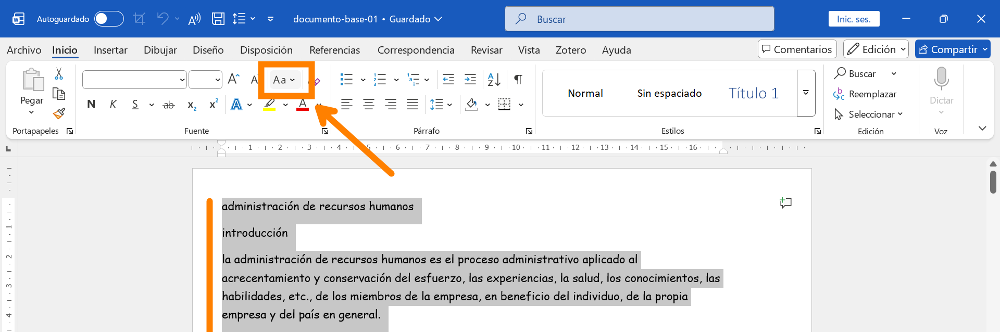
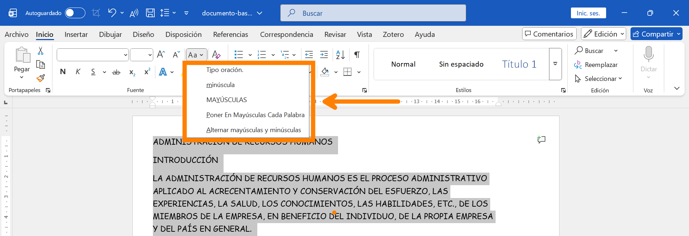
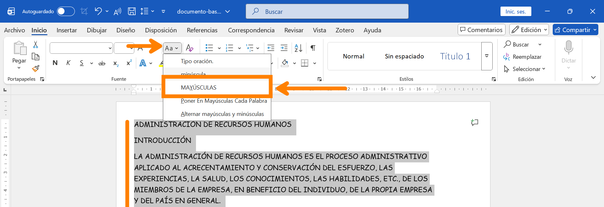

CÓMO USAR EL FORMATO: MAYÚSCULAS Y MINÚSCULAS EN WORD
En esta guía aprenderás cómo transformar el texto que ya has escrito para cambiarlo a mayúsculas, minúsculas, formato tipo oración y más.
A veces ocurre que escribimos un texto largo y nos damos cuenta de que olvidamos activar o desactivar la tecla Bloq Mayús (Caps Lock en inglés). Word tiene una herramienta especial en el grupo Fuente para solucionarlo sin tener que borrar y escribir todo de nuevo.
El botón de "Cambiar mayúsculas y minúsculas" (Aa)
- Selecciona el texto que necesitas cambiar.
- Ve a la pestaña INICIO en la cinta de opciones.
- En el grupo Fuente, busca un botón que tiene una "A" mayúscula junto a una "a" minúscula (Aa).
- Al hacer clic en él, se desplegará un menú con 5 opciones diferentes.
- Elige la opción que necesites y el texto cambiará al formato seleccionado.



Opciones de Conversión
- Tipo oración: Pone en mayúscula solo la primera letra de la primera palabra después de un punto, tal como al iniciar una oración o frase. Las demás letras se quedan en minúscula.
- minúsculas: convierte el texto seleccionado a minúsculas. aún si comienzas otra oración o frase, las demás letras se mantendrán en minúscula.
- MAYÚSCULAS: CONVIERTE TODO EL TEXTO SELECCIONSADO AL FORMATO DE MAYÚSCULAS (MUY ÚTIL PARA TÍTULOS).
- Poner En Mayúsculas Cada Palabra: Activa La Mayúscula Inicial Para Cada Una De Las Palabras (Suele Usarse En Títulos De Libros, Películas O Nombres Formales).
- tOGGLE cASE (Alternar MAY/min): iNVIERTE eL eSTADO aCTUAL dE lAS lETRAS. sI eSTABAN eN mAYÚSCULAS pASARÁN a mINÚSCULAS y vICEVERSA.
Atajo de Teclado (Tip de Experto)
Word tiene un truco rapidísimo para no tener que buscar el botón con el ratón:
- Selecciona el texto y presiona Shift + F3
- Cada vez que presiones esa combinación (dejando presionado el Shift y tocando el F3), el texto irá saltando de un modo al otro (Todo Mayúsculas -> Todo minúsculas -> Tipo Oración). ¡Pruébalo!